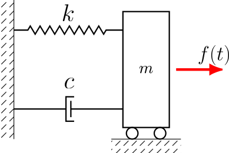
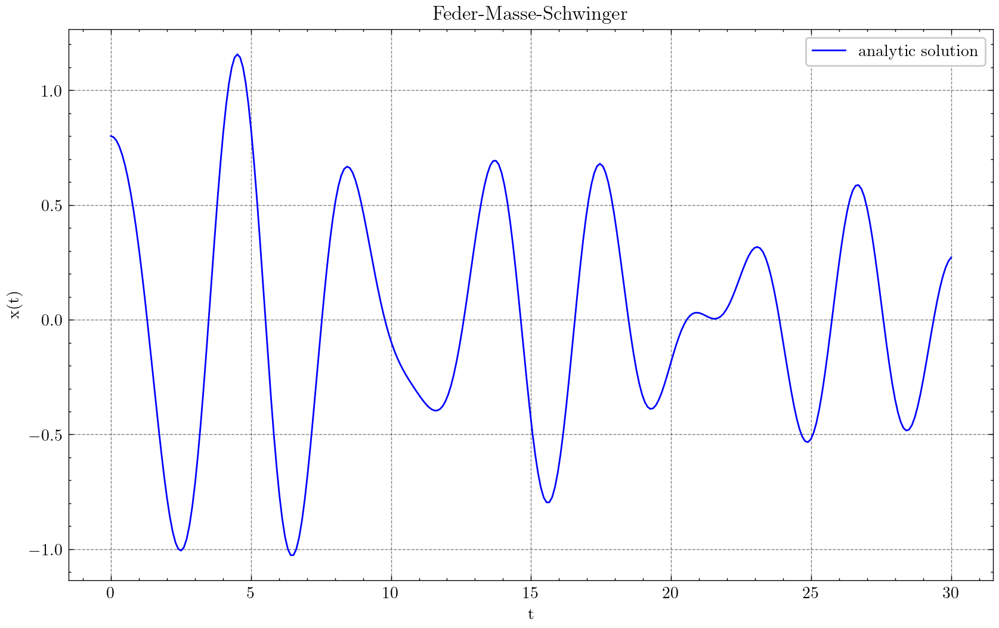
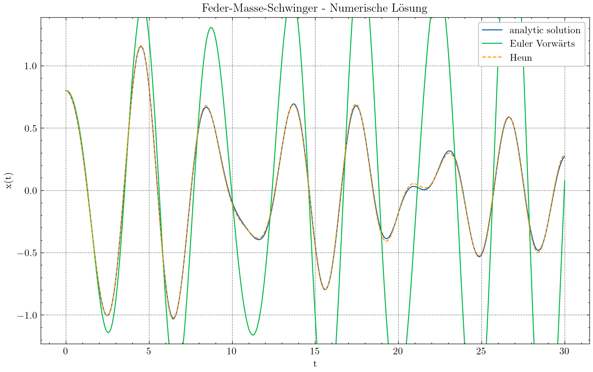
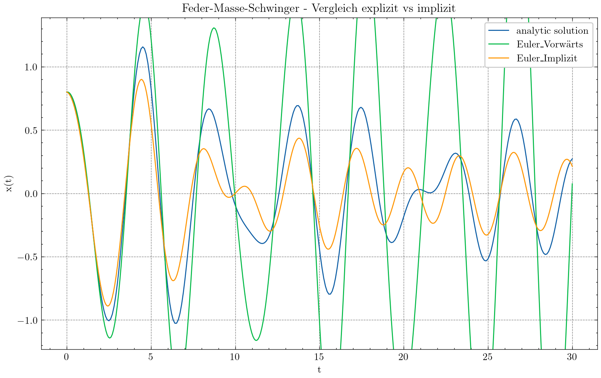
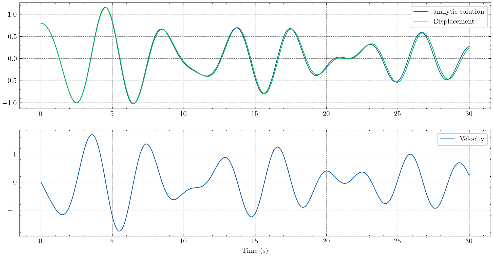
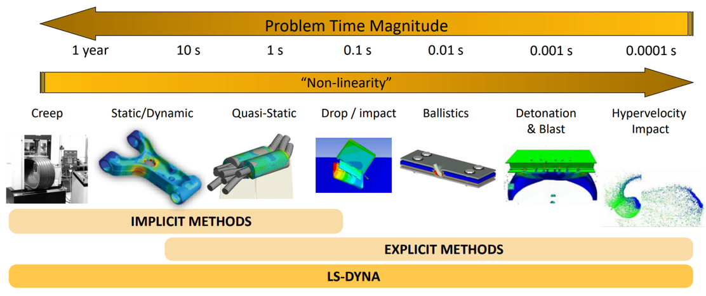
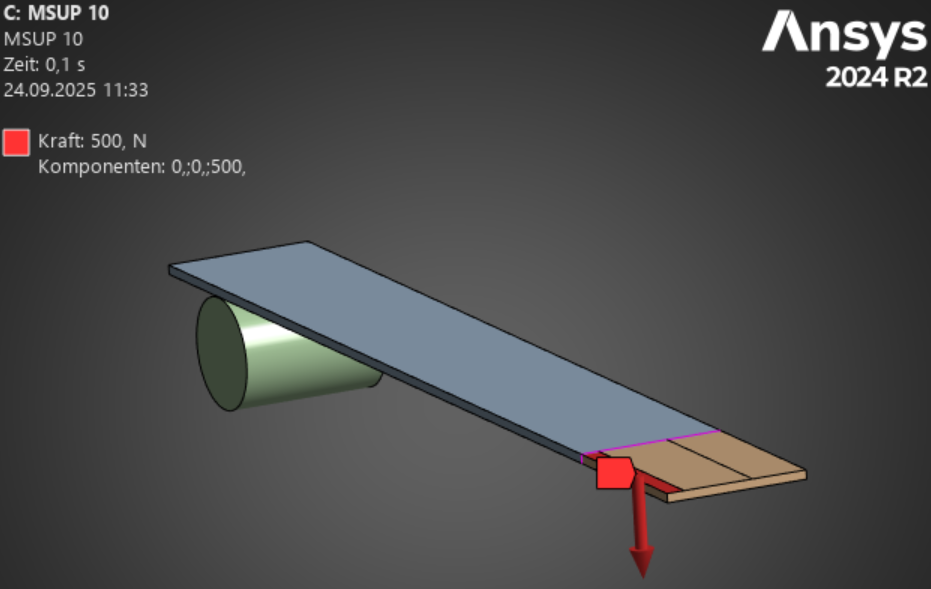
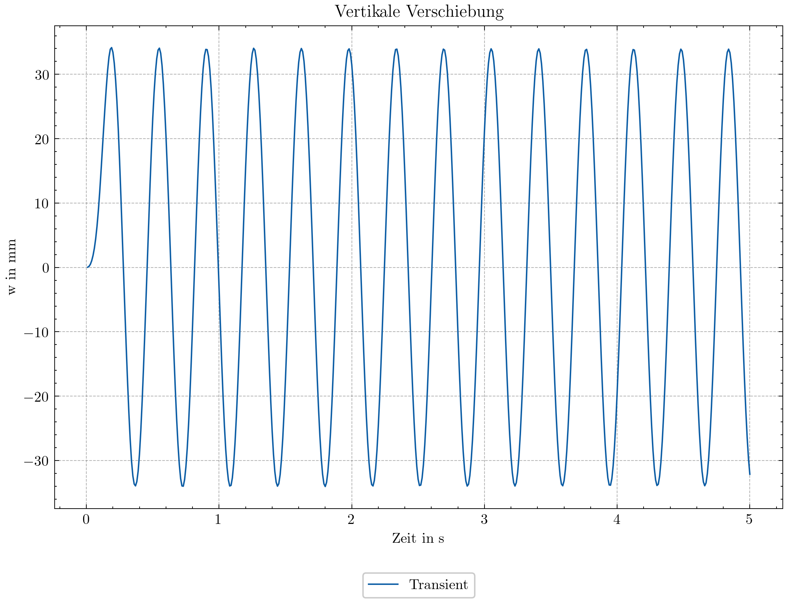

16. Transiente Dynamik#
Soll die Bewegungsgleichung (15.2):
im Zeitbereich gelöst werden muss das Differentialgleichungssystem integriert werden. Dies ist ein numerisches Problem, da die Lösung nicht analytisch bestimmt werden kann. Zur Lösung des Problems gibt es verschiedene Verfahren, die sich in der Genauigkeit und Stabilität unterscheiden. Prinzipiell unterscheiden wir zwischen expliziten und impliziten Verfahren. Für eine Einführung in die Methoden der Zeitintegration betrachten wir zunächst wieder einen einfachen Feder-Masse-Schwinger.
16.1. 1D Feder-Masse-Schwinger#
Im folgenden wird die Bewegung einer Masse \(m\) an einer Feder mit der Federsteifigkeit \(k\) und dem Dämpfungsbeiwert \(c\) betrachtet:
{kind=link}

Abb. 16.1 Gedämpfter Feder-Masse-Schwinger#
Bei einer Kraftanregung nach der Funktion:
ergibt sich folgende analytische Lösung für die Auslenkung \(x(t)\):
{kind=link}

Abb. 16.2 Analytische Lösung des Feder-Masse-Schwingers#
Parameter |
Wert |
|---|---|
\(m\) |
5 kg |
\(k\) |
10 N/m |
\(c\) |
0.5 Ns/m |
\(A\) |
3 N |
\(\omega_F\) |
2 rad/s |
\(x_0\) |
0.8 m |
\(v_0\) |
0.0 m/s |
Zur Bestimmung der Verschiebung der Masse \(x(t)\) zu einem beliebigen Zeitpunkt muss die Differentialgleichung des Feder-Masse-Schwingers:
zeitlich integriert werden. Dies ist eine Differentialgleichung zweiter Ordnung. Die meisten numerischen Verfahren sind jedoch für Systeme erster Ordnung entwickelt worden. Daher wird die Differentialgleichung in ein System erster Ordnung umgewandelt:
Allgemein lässt sich dann schreiben:
Gesucht ist eine numerische Approximation der Lösung \( y(t) \) auf einem Zeitintervall \([t_0, T]\).
16.2. Explizite Methoden der Zeitintegration#
Bei der expliziten Zeitintegration wird die Lösung \( y(t_{n+1}) \) nur aus den bekannten Werten \(y(t_n)\) und \(\dot{y}(t)\) berechnet. Sie haben eine bedingte Stabilität, was bedeutet, dass die Schrittweite der Integration klein genug sein muss, um numerische Stabilität zu gewährleisten. Ein Vorteil dieser Methoden ist die einfache Implementierbarkeit. Da keine komplexen Gleichungssysteme gelöst werden müssen, ist die Berechnung pro Zeitschritt schneller. Bei einer großen Anzahl von Integrationsschritten können Rundungsfehler akkumulieren. Die explizite Zeitintegration findet Anwendung in verschiedenen Bereichen, wie zum Beispiel:
Strukturdynamik: In der Erdbebeningenieurwissenschaft und beim Entwurf von Gebäuden unter dynamischer Last.
Crash-Simulation: In der Automobilindustrie zur Simulation von Kollisionen.
Ballistik: Zur Berechnung der Flugbahnen von Projektilen.
Aerodynamik: Bei der Simulation von transienten Strömungen um Objekte.
16.2.1. Explizites Eulerverfahren#
Das wohl einfachste Verfahren zur expliziten Zeitintegration ist das explizite Eulerverfahren. Es ist ein einstufiges Verfahren und wird auch als Forward Euler-Verfahren bezeichnet. Die Lösung wird wie folgt berechnet:
Diskretisierung der Zeit:
Wähle eine Schrittweite \( \Delta t > 0 \) und diskretisiere das Intervall: \( t_n = t_0 + n \Delta t \) für \( n = 0, 1, 2, \dots, N \), wobei \( N \Delta t = T - t_0 \).
Iterative Berechnung:
Starte mit dem Anfangswert \( y_0 \) zum Zeitpunkt \( t_0 \).
Approximiere die Lösung an den diskreten Zeitpunkten \( t_n \) durch:
\[\begin{equation*} y_{n+1} = y_n + \Delta t \cdot f(y_n, t_n) \end{equation*}\]Dabei ist \( y_n \) die Approximation von \( y(t_n) \).
Das Verfahren hat eine Fehlerordnung von \( O(\Delta t) \). Es ist konditional stabil – zu große Schrittweiten \( \Delta t \) können zu numerischer Instabilität führen (insbesondere bei steifen DGLs).
16.2.2. Methode von Heun#
Das Verfahren von Heun ist ebenfalls ein Einschrittverfahren. Es ist das einfachste Verfahren der Runge-Kutta-Familie. Die Lösung wird wie folgt berechnet:
Diskretisierung der Zeit:
Wähle eine Schrittweite \( \Delta t > 0 \) und diskretisiere das Intervall: \( t_n = t_0 + n \Delta t \) für \( n = 0, 1, 2, \dots, N \), wobei \( N \Delta t = T - t_0 \).
Iterative Berechnung:
Starte mit dem Anfangswert \( y_0 \) zum Zeitpunkt \( t_0 \).
Approximiere die Lösung an den diskreten Zeitpunkten \( t_n \) durch einen zweistufigen Prozess:
Berechne zunächst einen vorläufigen Wert \( \tilde{y}_{n+1} \) mittels Euler-Vorwärtsverfahren:
\[\begin{equation*} \tilde{y}_{n+1} = y_n + \Delta t \cdot f(y_n, t_n) \end{equation*}\]Nutze diesen vorläufigen Wert, um den Schlusswert \( y_{n+1} \) zu verbessern:
\[\begin{equation*} y_{n+1} = y_n + \frac{\Delta t}{2} \left( f(y_n, t_n) + f(\tilde{y}_{n+1}, t_{n+1}) \right) \end{equation*}\]
Dabei ist \( y_n \) die Approximation von \( y(t_n) \) und \( t_{n+1} = t_n + \Delta t \).
Das Heun-Verfahren hat eine Fehlerordnung von \( O(\Delta t^2) \), was es genauer macht als das Euler-Verfahren. Auch das Heun-Verfahren ist nur bedingt stabil, erfordert aber aufgrund seiner höheren Genauigkeit möglicherweise weniger restriktive Schrittweiten als das Euler-Verfahren. Es ist komplexer in der Implementierung als das Euler-Verfahren, da zwei Auswertungen der Funktion \( f \) pro Schritt erforderlich sind.
Nachfolgend ist für eine Schrittweite von \(\Delta t = 0.075\) die Lösungen des Euler-Vorwärtsverfahrens und des Heun-Verfahrens dargestellt:
{kind=link}

Abb. 16.3 Analytische und numerische Lösung des Feder-Masse-Schwingers im Vergleich.#
In der dargestellten Verschiebungslösung ist zu erkennen, dass die numerische Lösung des Euler-Verfahrens eine deutlich geringere Genauigkeit aufweist als die Methode nach Heun Lösung. Für die gegebenen Parameter und die Schrittweite ist das Euler Vorwärtsverfahren instabil - Die Amplituden nehmen stetig zu.
16.2.3. Weitere Explizite Zeitintegrationen#
weitere weit verbreite Verfahren der expliziten Zeitintegration sind das zentrale Differenzverfahren, das Runge-Kutta-Verfahren 4. Ordnung und das Adams-Bashforth-Verfahren.
16.3. Explizite Zeitintegration in der Strukturdynamik#
Wenn hohe Frequenzen (Crash) oder Schockwellen die Lösung dominieren, dann sind sehr kleine Zeitschritte notwendig. Für diese Fälle ist eine explizite Zeitintegration die effizienteste Möglichkeit die Bewegungsgleichung zu integrieren. Die meist verwendete Methode stellt das zentrale Differenzverfahren dar. Die Geschwindigkeit \(\bm{v}\) und die Beschleunigung \(\bm{a}\) zum Zeitpunkt \(t_n\) werden bestimmt zu:
Setzt man diese Approximationen in die Bewegungsgleichung ein, so erhält man:
Diese Gleichung muss man nach \(u_{n+1}\) auflösen und erhält:
Da die Massenmatrix \(\bm{M}\) und die Dämpfungsmatrix \(\bm{C}\) konstant sind, ergibt sich ein besonders effizientes Verfahren, wenn die beiden im Vorfeld faktorisiert werden und während der Zeitintegration nur noch die Rücksubsitution durchgeführt werden muss. Eine weitere Technik ist das sogenannte Mass-Lumping. Dabei werden \(\bm{M}\) und \(\bm{C}\) durch Diagonalmatrizen approximiert. Eine Invertierung dieser ist dann trivial und Gleichung (16.3) kann nur über Vektoroperationen direkt nach \(u_{n+1}\) aufgelöst werden (In Grafikkarte beschleunigbar).
Explizite Zeitintegrationen sind wie bereits erwähnt nicht unbedingt stabil. Der gewählte Zeitschritt darf nicht größer als der kritische Zeitschritt \(\Delta t\rs{crit}\) sein:
wobei \(h\) die Elementgröße, \(c_L\) die Schallgeschwindigkeit im Material und \(\delta\) ein Reduktionsfaktor \((0.2\leq \delta \leq 0.9)\) darstellt. Die Gleichung (16.4) wird auch als das Courant-Kriterium bezeichnet. Der kritische Zeitschritt richtet sich übrigens nach dem kleinsten Element im Modell. Ein einziges zu kleines Element kann somit das Gesamte Lösungsverhalten massiv stören.
Die Schallgeschwindigkeit \(c_L\) in Gleichung (16.4) ist definiert als:
Damit kann die kritische Zeitschrittweite vergrößert werden, ind dem die Dichte lokal ebenfalls vergrößert wird. Dieses Verfahren nennt sich Massenskalierung. Man sollte darauf achten, dass nicht zu viel Masse hinzugefügt wird, da sich hierdurch das Lösungsverhalten des Systems ändert.
16.4. Implizite Zeitintegration#
Implizite Zeitintegrationsverfahren sind eine Klasse von Algorithmen, die in der numerischen Lösung von Differentialgleichungen verwendet werden. Im Gegensatz zu expliziten Methoden, bei denen der neue Zustand eines Systems ausschließlich auf Basis des aktuellen Zustands und vergangener Zustände berechnet wird, berücksichtigen implizite Verfahren auch zukünftige Werte. Dies macht sie oft stabiler und ermöglicht größere Zeitschritte, besonders bei steifen Problemen. Dafür ist es oftmals erforderlich ein nichtlineares Gleichungssystem zu lösen. Dies macht die impliziten Verfahren rechenaufwendiger als die expliziten Verfahren.
16.4.1. Euler-Rückwärts Verfahren#
Das Euler-Rückwärts Verfahren, auch bekannt als implizites Euler-Verfahren, ist eine Methode zur numerischen Lösung von gewöhnlichen Differentialgleichungen (ODEs). Es wird oft verwendet, wenn ein System steife ODEs beinhaltet oder wenn eine höhere Stabilität als beim expliziten Euler-Verfahren erforderlich ist.
Ausgangspunkt: Gegeben sei die ODE \( \frac{dx}{dt} = f(t, x) \) mit Anfangsbedingung \( x(t_0) = x_0 \).
Diskretisierung der Zeit: Die Zeitachse wird in diskrete Schritte unterteilt: \( t_{n+1} = t_n + \Delta t \), wobei \( \Delta t \) die Schrittweite darstellt.
Rückwärtsschritt: Statt den nächsten Wert anhand des aktuellen zu berechnen, bestimmt man ihn über den unbekannten nächsten Wert:
\[\begin{equation*} x_{n+1} = x_n + \Delta t \cdot f(t_{n+1}, x_{n+1}) \end{equation*}\]Hierin liegt die Implizität der Methode, da \( x_{n+1} \) auf beiden Seiten der Gleichung vorkommt.
Lösen der impliziten Gleichung: Zur Bestimmung von \( x_{n+1} \) muss häufig eine algebraisches Gleichungssystem gelöst werden. Dies erfordert iterative Methoden wie das Newton-Verfahren. Im folgenden wird der Index \(n+1\) weggelassen und einfach \(x\) geschrieben. Ein neuer Index \(k\) wird eingeführt, welcher die Iteration des Newton-Verfahrens kennzeichnet.
\[\begin{align*} R(x_{k+1}) & = x_{n+1} - \left( x_n + \Delta t \cdot f(t_{n+1}, x_{n+1}) \right) & \rightarrow & 0 \\ R(x_{k+1}) & \approx R(x_k) + \frac{\partial R(x_k)}{\partial x_k} \Delta x_k & = 0 &\\ \Delta x_k & = -R(x_k) \left(\frac{\partial R(x_k)}{\partial x_k} \right)^{-1} & & \\ x_{k+1} & =x_k + \Delta x_k & & \end{align*}\]Hierbei ist \(\frac{\partial R(x_k)}{\partial x_k}\) die Jacobian \(J\) des Residuums und für das implizite Eulerverfahren gleich:
\[\begin{equation*} J = 1 - \Delta t \frac{\partial f(t_{n+1})}{\partial x_k} \end{equation*}\]Für steife Differentialgleichungen und Systeme mit großen Schrittweiten bietet dieses Verfahren bessere Stabilitätseigenschaften.Es ist unbedingt stabil (A-stabil). Egal welche Schrittweite genutzt wird, die Lösung bleibt stabil. Das Verfahren hat eine Fehlerordnung von \( O(\Delta t) \). Wegen der Notwendigkeit, eine implizite Gleichung zu lösen, ist der Rechenaufwand pro Schritt höher.
{kind=link}

Abb. 16.4 Analytische und numerische Lösung des Feder-Masse-Schwingers im Vergleich.#
In der dargestellten Verschiebungslösung ist zu erkennen, dass die numerische Lösung des impliziten Euler-Verfahrens eine bessere Stabilität als das explizite Euler-Verfahren aufweist. Die Schwingungen schaukeln sich nicht auf. Dennoch ist mit den gegebenen Parametern die Lösung sehr ungenau.
16.4.2. Die \(\theta\)-Methode#
Die \(\theta\) Methode stellt eine lineare Kombination aus explizitem und impliziten Verfahren dar. Der neue Funktionswert wird wie folgt berechnet:
Der prinzipielle Ablauf der Zeitintegration entspricht dem des impliziten Euler-Verfahrens. Für spezielle Werte von \(\theta\) ergeben sich bekannte Verfahren:
\(\theta\) |
Verfahren |
Fehlerordnung |
|---|---|---|
0 |
explizites Euler-Verfahren |
1 |
0.5 |
Crank-Nicolson-Verfahren |
2 |
1 |
implizites Euler-Verfahren |
1 |
16.5. Implizite Zeitintegration in der Strukturdynamik#
Die populärste Methode der impliziten Zeitintegration ist das Newmark-Verfahren [Newmark, 1959]. Es ist eine Methode zweiter Ordnung, die die Beschleunigung als unbekannte Größe behandelt. Die Methode ist stabil und wird oft in der Praxis verwendet. Das Verfahren basiert auf einer Taylorreihenentwicklung der Verschiebung und der Geschwindigkeit:
Die Terme höherer Ordnung werden hierbei zu 0 gesetzt und für die noch unbekannten Beschleunigungen \(\ddot{\bm{u}}\) werden lineare Ansätze getroffen:
In diesen Vorschriften tauchen auch Terme der Beschleunigung zum Zeitpunkt \(n+1\) auf - diese sind noch unbekannt, weshalb es sich um ein implizites Integrationsverfahren handelt. Die Parameter \(\beta\) und \(\gamma\) sind frei wählbar und bestimmen die Genauigkeit und das Verhalten des Verfahrens. In [Zienkiewicz et al., 2005] werden folgende Werte empfohlen:
Für die Lösung der Bewegungsgleichung wird die Approximation der Verschiebung und der Geschwindigkeit in Abhängigkeit der Verschiebung allein umgestellt.
Eingesetzt in die Bewegungsgleichung:
liefert:
Für jeden Zeitschritt wird dann das Gleichungssystem:
gelöst.
{kind=link}

Abb. 16.5 Analytische und numerische Lösung des Feder-Masse-Schwingers im Vergleich - Newmark Verfahren.#
16.6. Zusammenfassung Explizite vs. Implizite Zeitintegration#
Bei der Analyse dynamischer Probleme muss die Zeit diskretisiert werden, was durch Zeitintegrationsmethoden erreicht wird. Es gibt zwei Hauptklassen von Zeitintegrationsverfahren: explizite und implizite Methoden. Die explizite Zeitintegration berechnet den Systemzustand direkt zum nächsten Zeitschritt basierend auf aktuellen und vergangenen Informationen. Sie erfordert keine Lösung eines linearen Gleichungssystems. Das macht sie einfach zu implementieren. Aufgrund ihrer bedingten Stabilität ist ein sehr kleiner Zeitschritt erforderlich, besonders bei steifen Systemen. Die implizite Zeitintegration berechnet den nächsten Systemzustand unter Einbeziehung des neuen Zustands selbst, was eine iterative Lösung eines linearen oder nichtlinearen Gleichungssystems bedeutet. Implizite Methoden bieten unbedingte Stabilität, was größere Zeitschritte ermöglicht, auch bei steifen Systemen.
{kind=link}

Abb. 16.6 Anwendung der expliziten und impliziten Zeitintegration Ansys Education Resources#
16.7. Beispiel: Sprungbrett mit impliziter Zeitintegration#
In diesem Beispiel wird die Bewegung eines Sprungbretts nach einem Sprung simuliert. Die Kraft von 500 N wird innerhalb von 0,1 s aufgebracht und danach innerhalb 0,1 s wieder abgebaut. Die Simulation wird mit einer impliziten Zeitintegration vom Newmark-Typ durchgeführt.
{kind=link}

Abb. 16.7 Sprungbrett mit Lastaufbringung#
Eine effiziente Methode der linearen Dynamik ist die Modenüberlagerung - siehe hierzu: Modenüberlagerung in transienter Berechnung
{kind=link}

Abb. 16.8 Vertikale Verschiebung des Sprungbretts in Abhängigkeit der Zeit.#